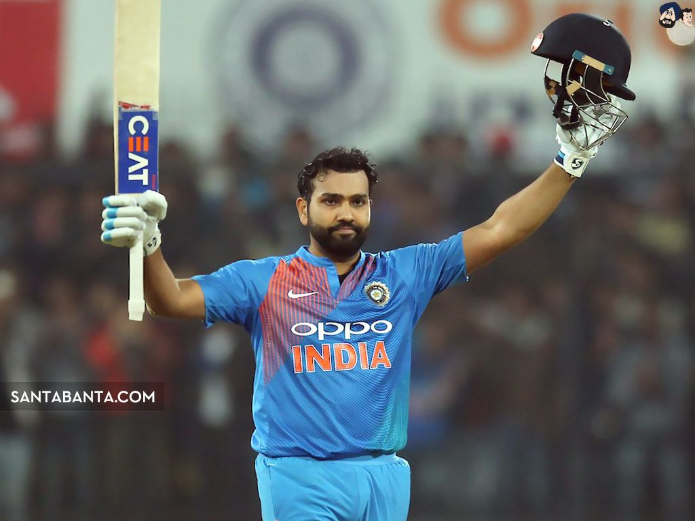
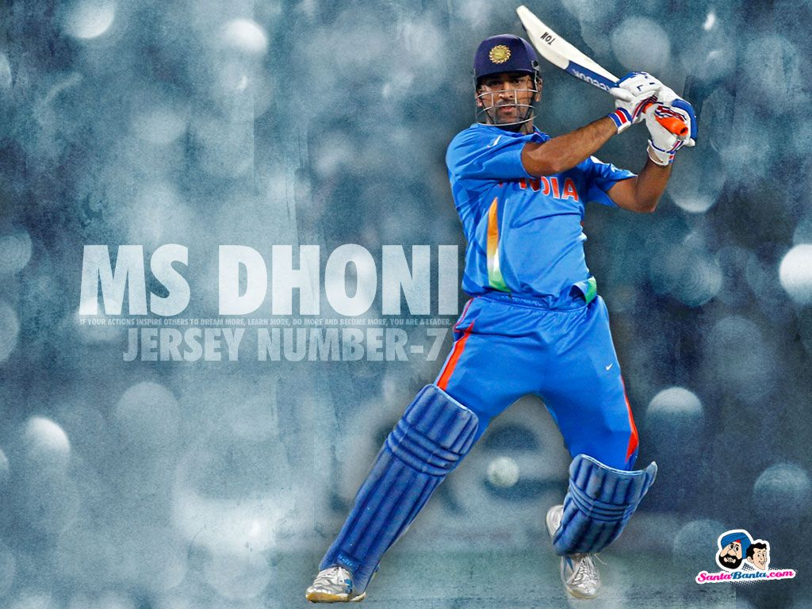
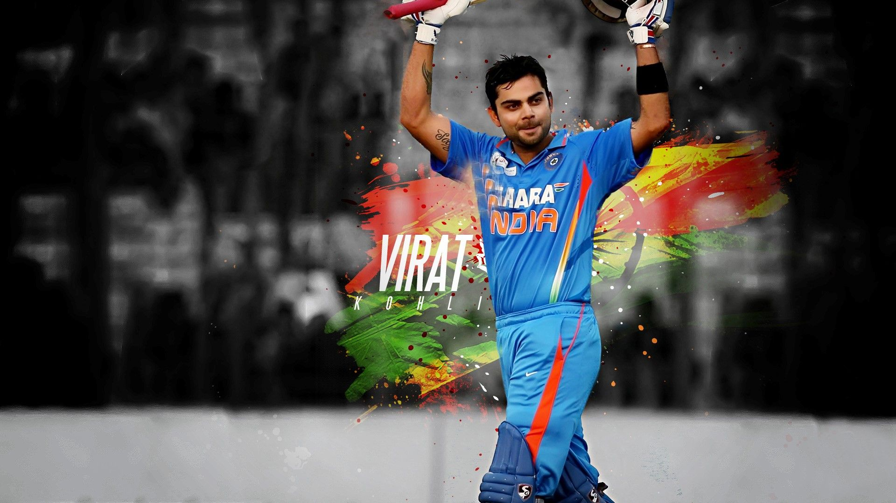
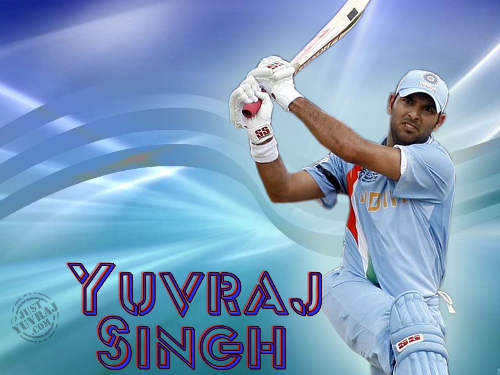

 Rohit Sharma Personal Information BornApr 30, 1987 (34 years)Birth PlaceNagpur, MaharashtraHeight--RoleBatsmanBatting StyleRight Handed BatBowling StyleRight-arm offbreak Here's why
 MS Dhoni Personal Information BornJul 07, 1981 (39 years)Birth PlaceRanchi, Bihar (now Jharkhand)Height5 ft 11 in (180 cm)RoleWK-BatsmanBatting StyleRight Handed BatBowling StyleRight-arm medium Here's how
 Virat Kohli Personal Information BornNov 05, 1988 (32 years)Birth PlaceDelhiHeight5 ft 9 in (175 cm)RoleBatsmanBatting StyleRight Handed BatBowling StyleRight-arm medium Read more
Hardik Pandya Personal Information BornOct 11, 1993 (27 years)Birth PlaceChoryasi, GujaratHeight--RoleBatting AllrounderBatting StyleRight Handed BatBowling StyleRight-arm fast-medium Just do it...
Shikhar Dhawan Personal Information BornDec 05, 1985 (35 years)Birth PlaceDelhiHeight--RoleBatsmanBatting StyleLeft Handed BatBowling StyleRight-arm offbreak Here's why
 Yuvraj Singh Personal Information BornDec 12, 1981 (39 years)Birth PlaceChandigarhHeight6 ft 2 in (188 cm)RoleBatting AllrounderBatting StyleLeft Handed BatBowling StyleLeft-arm orthodox Stop here